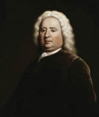

(1689-1761)

Roman sanatına dramatik yoğunluğu getirmesi ve kahramanların iç dünyasına eğilmesiyle İngiliz romanında önemli bir yere sahip olan Samuel Richardson, aynı zamanda matbaacıydı; ancak kitap basmak 18. yüzyılın başında hiç de kolay bir iş değildi.
İngiliz klasik romanının ilk önemli yazarlarından Samuel Richardson, 16 Ağustos 1689 tarihinde Derbyshire'da dünyaya geldi. Pamela (1740), Clarissa (1748) ve Sir Charles Grandison'un Hikayesi (1753) adlı romanlarıyla ve bastığı, sayıları 500'ü geçen roman ve dergilerle zamanının önemli edebiyatçılarından ve matbaacılarından biri oldu. Çocukluğunda Christ's Hospital'da okuma-yazma öğrenen Richardson'ın hayatının ilk yılları hakkında çok az şey bilinmektedir. Richardson'u önceleri rahip yapmak isteyen babası okul masraflarını karşılayamayınca oğlunu yanına aldı ve ona baskıcılık mesleğini öğretti.
Babasının yanından ayrıldıktan sonra John Wilde adlı sert bir baskı ustasının matbaasında çalışan Richardson, bu arada yazarlık yeteneğini keşfeden bir beyle tanıştı ve ikili uzun yıllar yazıştılar. Fakat bu adamın ani ölümüyle yazar, tekrar basım mesleğine döndü ve 1719 yılında kendi basımevini kurdu. 1721'de eski patronunun kızı Martha Wilde'la evlenen Richardson, 1723 yılı haziranında on beş günde bir yayımlanan The True Briton adlı muhalif bir dergiyi basmaya başladı. Bu dergide sadece matbaacı olarak değil yazar olarak da görev aldığı söylenmektedir, ancak yazarın adı herhangi bir sayıda geçmez.
Evlendikten sonra on yol içinde eşini, beş oğlunu ve bir kızını çeşitli hastalıklardan dolayı kaybeden Richardson yeniden evlendi ve yeni eşinin altı çocuğuyla birlikte yaşamaya başladı. 1733 yılında Avam Kamarası'nın baskı işlerini alan Richardson, mesleğinde büyük bir ilerleme kaydetti. Aynı yıl yazar Çırağın El Kitabı adında bir kitap yayımladı. Yeni yetişen çıraklara iş hayatında başarılı olma yollarını öğreten kitap çırak adaylarına tiyatro, bar, kumar gibi "eğlence"lerden uzak durmalarını öğütlüyordu.
Kasım 1740'ta yayımlanan Pamela ya da Ödüllendirilen Erdem adlı roman bugün ilk İngiliz romanlarından biri kabul edilmektedir. Kadının toplumdaki ve ailedeki yeri konusunda ahlakçı ve ideal bir yapıya sahip olan roman birçok taraftar bulduğu gibi "ideal" zihniyetle alay eden Henry Fielding gibi yazarlar tarafındansa eleştirildi. Bunu 1747 ve 1748'de üç cilt halinde yayımlanan Clarissa ya da Bir Genç Kızın Hikayesi adlı roman izledi. 1749 yılından itibaren çevresindeki kadınlar yazardan "Pamela ve Clarissa gibi erdemli bir erkek karakter" yaratmasını rica etmeye başladılar. Sonunda Richardson, baskılara olumlu karşılık verdi ve 1753 yılında Sir Charles Grandison'ın Hikayesi adlı üçüncü romanı yayımlandı.
Yaşamının son yıllarında parasal açıdan rahata kavuşan ve sosyal açıdan da büyük saygı gören bir işadamı ve yazar olan Samuel Richardson'ın tek şikayeti gittikçe bozulan sağlığıydı. Uzun süre hastalık çeken ve sonunda da felç geçiren yazar, 4 Temmuz 1761'de öldü.
Seçme Yapıtları: Pamela (1740), Clarissa (1748), Sir Charles Grandison Hikayesi (1753)